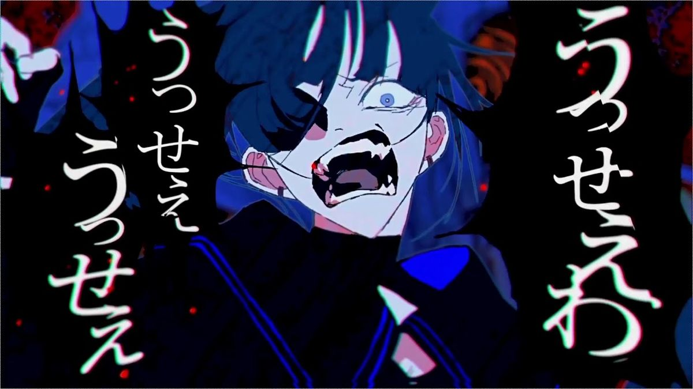
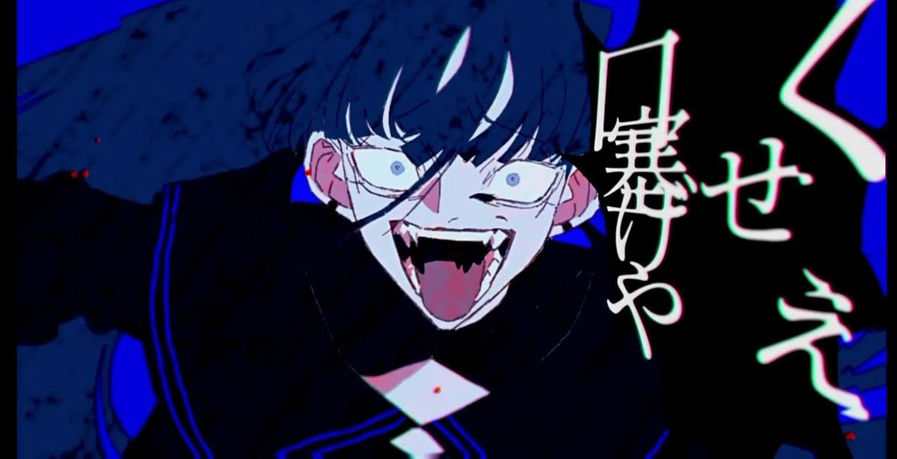
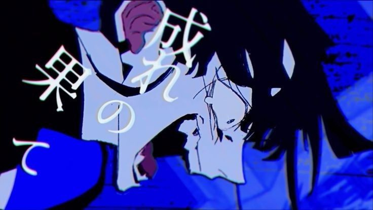

💠La Sombra que Canta💠 |
|---|
El Estallido de una Nueva Era: El Debut Profesional
El 23 de octubre de 2020, un día antes de cumplir 18 años, Ado dejó de ser una artista de nicho en internet para convertirse en un fenómeno nacional. Su entrada en la escena profesional no fue sutil; fue un grito de rebeldía que sacudió los cimientos de la industria musical japonesa.



El fenómeno "Usseewa"
Su sencillo debut, "Usseewa" (que se traduce aproximadamente como "¡Cállate!" o "Cierra la boca"), se volvió viral de forma instantánea. La canción, compuesta por el productor de Vocaloid Syudou, capturó perfectamente la frustración, el estrés y la rabia contenida de la juventud japonesa frente a las estrictas normas sociales y la jerarquía laboral.

⬆️VER VIDEO "Usseewa":3⬆️
Hitos del lanzamiento:
- Récords en Billboard: La canción alcanzó el número 1 en el Billboard Japan Hot 100 y se mantuvo en las listas por meses.
- Cifras astronómicas: El video musical oficial en YouTube superó las 100 millones de reproducciones en apenas unos meses, una cifra inaudita para una artista debutante y anónima.
- Impacto cultural: La palabra "Usseewa" se convirtió en una de las frases más utilizadas del año en Japón, simbolizando una pequeña rebelión contra el "sentido común" tradicional.